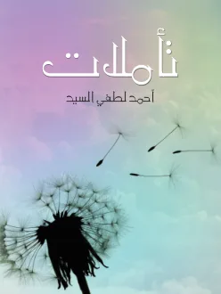

تأملات: في الفلسفة والأدب والسياسة والاجتماع

قراءة عربية أصلية في مقاطع مختارة، وليست تلخيصا كاملا للكتاب. موضع المقاطع في ملف PDF المرتبط: الصفحات ١٣–١٤. نناقش ما تدعمه هذه المقاطع فقط، ولا نزعم استعراض جميع الفصول.
الآثار حجة في جدل الحاضر
يربط لطفي السيد في الآثار القديمة معرفة الماضي المصري بمقاومة اليأس من إمكان الاستقلال والتقدم. يستخدم صورا عن السياسة والرحلات والآثار ليبني صلة بين القدرة الماضية والإمكان المقبل. لذلك لا يؤدي الماضي وظيفة الزينة وحدها، بل يدخل في معركة حول صورة المصريين عن أنفسهم.
زاوية وحدود القراءة
هذه قراءة في افتتاح مقال تاريخي، لا تأييد لسرده عن التوسع المصري أو للمقارنات الاستعمارية التي يستخدمها. أوصافه التمجيدية وأرقامه وتواريخه تحتاج إلى تحقيق مستقل. ويمكن قراءة حجته نقديا بسؤال: هل إثبات إنجاز سابق يكفي لإثبات القدرة الحالية، أم يحتاج الانتقال من الفخر إلى العمل إلى شروط أخرى؟
الطبعة والقراءة
نسخة إلكترونية مجانية رسمية من مؤسسة هنداوي عبر صفحات. رابط PDF من خادم الناشر، وقد تحققنا أنه يرسل الملف للتنزيل. لا نستضيف نسخة من الكتاب. هذه النسخة من الكتاب صادرة ومتاحة مجانًا من مؤسسة هنداوي بشكل قانوني؛ حيث إن نص الكتاب يقع في نطاق الملكية العامة تبعًا لقوانين الملكية الفكرية.
تنزيل PDF المجاني ↓ القراءة والمصدر الرسمي ↗